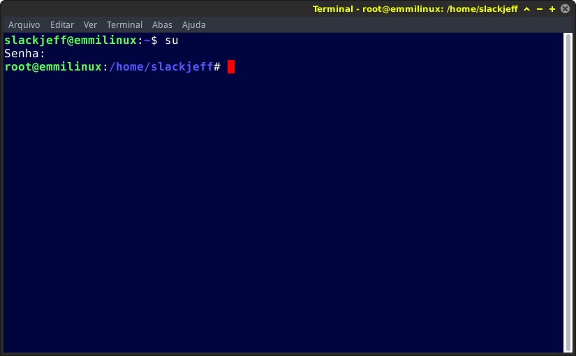
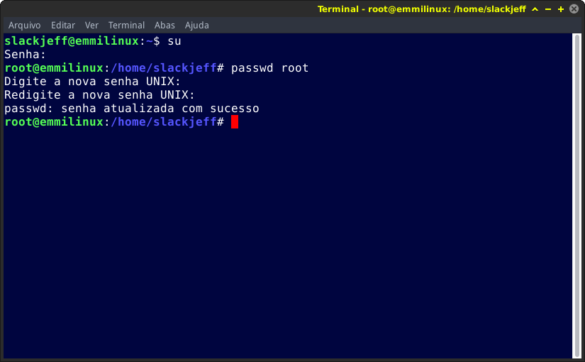

Trocando senha Root
Trocando a senha do Root.
Abra o terminal e entre com a senha do seu root.
Lembrando que uma boa senha do super usuário deve ter caracteres especiais, exemplo sl@ckjeffe304r5E32.
Este procedimento dificulta a invasão em seu computador.

Após logar como root vamos rodar o comando passwd e o nome do usuário, em nosso caso é o Root.
# passwd root
Digite a nova senha e repita para confirmar.

Pronto, sua senha do root foi trocada com êxito, lembre-se de colocar uma senha bem forte!